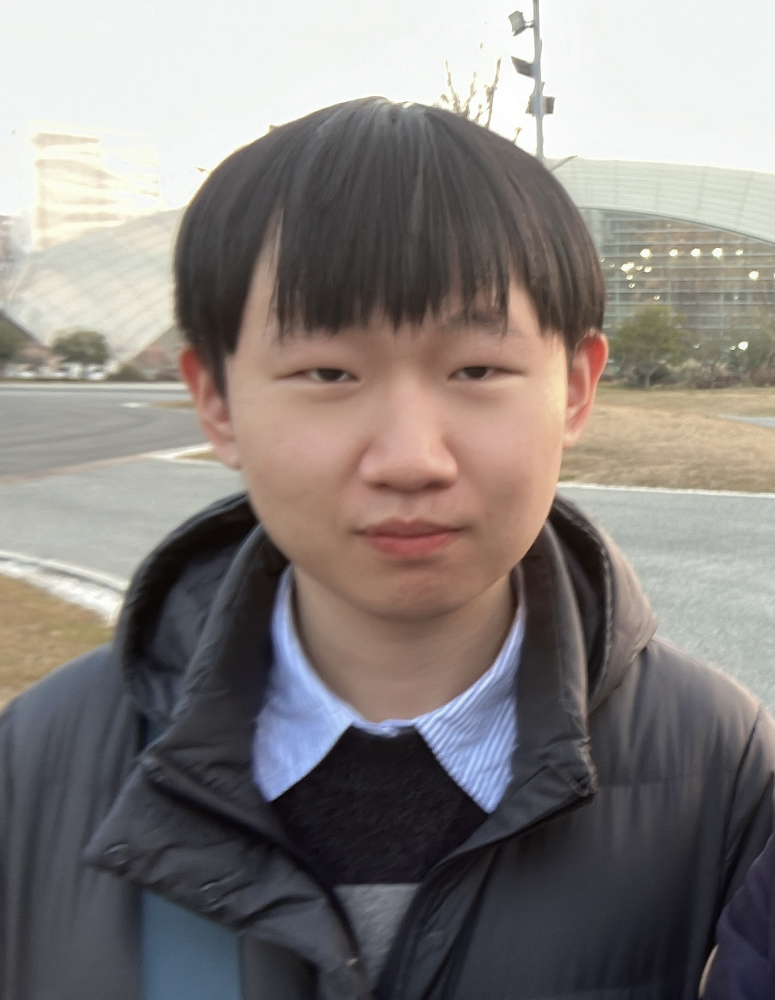

Hi!
 I am Shiqi Lei, a Master student majoring in Electronic and Information Engineering at University of Chinese Academy of Sciences. I got BSc in Mathematics and Applied Mathematics at Tsinghua University. I'll keep uploading my study notes and photography works here.
My primary research interest is in Algorithmic Game Theory and Machanical Design. Unlike some conservative mathematicians, machine learning methods are welcomed in my research. Here's my CV.
My cameras are Panasonic Lumix S1R and Sony RX10M3.
Research
The research projects listed below are done in 2020-2021, now I'm working on new projects in Game Theory.- Unsupervised Real-World Image Denoising
- AI Human Illusion Replication
- High Definition Cryo-EM 3D Reconstruction
What is Yorozuya?
Yorozuya is an outfit doing errands or odd-jobs for a fee in Japanese manga series Gintama. To establish such an institution is my childhood dream. I've used the Chinese version of this word as my ID for long.
Contact
Room 1212
Zhinenghua (Intellectualization) Building
95 Zhongguancun East Road, Haidian District, Beijing
E-mail: hunter118 {at} 126 {dot} com